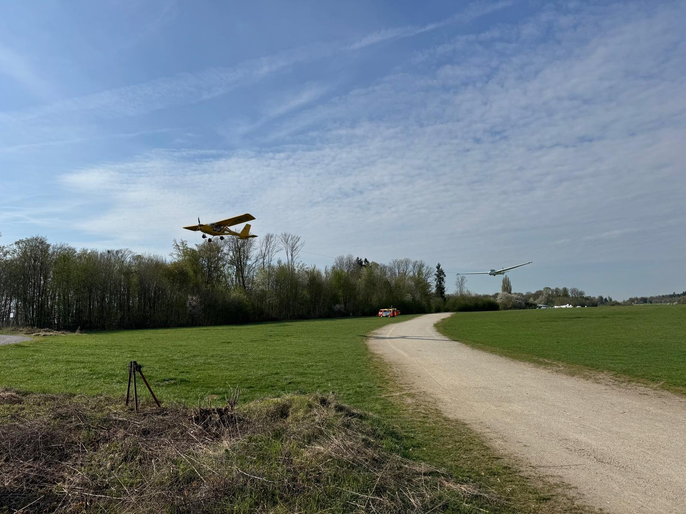

Der Verein
✈️ Willkommen beim Luftsportverein Regensburg – gemeinsam hoch hinaus!

✈️ Gemeinsam abheben. Gemeinsam mehr erleben!
Du interessierst dich fürs Fliegen, suchst ein neues Hobby oder möchtest etwas Neues ausprobieren? Dann bist du bei uns genau richtig!
Mit rund 140 Mitgliedern sind wir der größte Luftsportverein in der Umgebung von Regensburg. Von April bis Oktober sind wir bei gutem Wetter jedes Wochenende am Flugplatz und freuen uns über deinen Besuch.
Bei uns steht Gemeinschaft an erster Stelle: Jeder packt mit an, damit alle möglichst viel Zeit in der Luft verbringen können. Auch abseits des Flugbetriebs ist einiges geboten – von der gemeinsamen Flugzeugwartung im Winter bis hin zu Ausflügen und Vereinsfesten.
Du möchtest selbst Pilot werden?
Bei uns lernst du Schritt für Schritt, ein Segelflugzeug sicher zu steuern. Vorkenntnisse oder ein eigenes Flugzeug brauchst du nicht – unsere Fluglehrer begleiten dich durch die Ausbildung. Nach bestandener Prüfung steht dir unser gesamter Flugzeugpark zur Verfügung.
Neugierig geworden? Dann komm vorbei, lerne uns kennen und erlebe bei einem Schnupperflug selbst, wie faszinierend Segelfliegen ist. Vielleicht findest du bei uns ein Hobby fürs Leben!
Wir freuen uns auf dich – bis bald am Flugplatz Oberhinkofen! 🛩️
Zahlen
| Gegründet | 1950 |
|---|---|
| Mitglieder | über 130, davon ca. 70 aktive Pilotinnen und Piloten |
| Flugzeuge | 9 – zur Flotte |
| Flugplatz | Oberhinkofen (Navi: Einthal, 93083 Obertraubling) |
Vorstand
Gewählt auf der Jahreshauptversammlung am 14. März 2025 für zwei Jahre.
| 1. Vorsitzender | Dr. Martin Postner |
|---|---|
| 2. Vorsitzender | Mick Scherrieble |
| Kassenverwalter | Dean Maximilian Schoke |
| Technischer Leiter | Roland Pschorn |
| Schriftführer | Florian Niklas Karow |
Kontakt
| Anschrift | Luftsportverein Regensburg e. V., Postfach 1126, 93081 Obertraubling |
|---|---|
| info@luftsportverein-regensburg.de | |
| Vereinsregister | VR 94, Amtsgericht Regensburg |